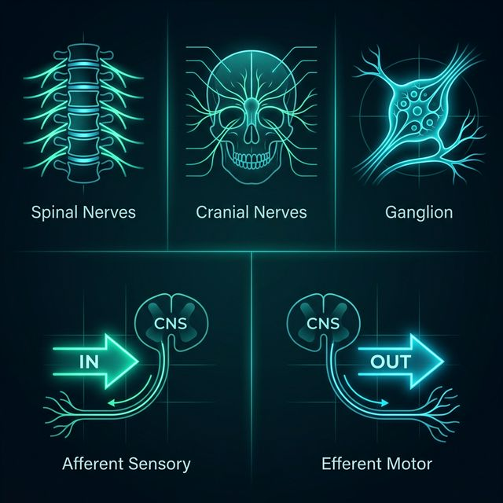
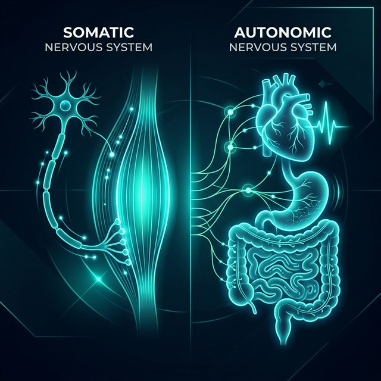

3.1 Afferent-Efferent & Geniş Mimari
31 Çift Spinal Sinir
12 Çift Kranial Sinir
Korunma: Kafatasız/Omurgasız
Afferent (Duyusal)
Perifer ➔ MSS (Duyusal Giriş)
Deri, kas ve iç organlardan gelen duyusal uyarıları merkezi işlemciye taşır.
Efferent (Motor)
MSS ➔ Perifer (Motor Çıkış)
Merkezi komutları ileterek kas hareketlerini ve organların işleyişini kontrol eder.

3.2 Somatik & Otonom Sinir Sistemi
Somatik
İskelet kasları üstünde gönüllü kontrol sağlar. Duyusal veri aktarır.
Otonom (OSS)
Kalp ve sindirim gibi istemsiz (bilinç dışı) süreçleri yönetir.
Denge (S/P)
Sempatik: Savaş
Parasempatik: Dinlen
⚠ Enterik Sistem (İkinci Beyin): Gastrointestinal sistemi MSS'den bağımsız olarak yönetme yeteneğine sahiptir.